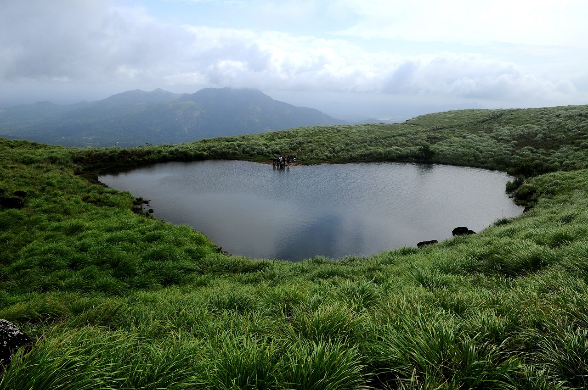
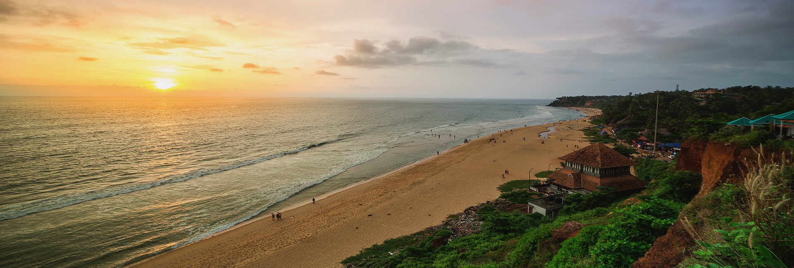

My Favourite Place's in Kerala
“Kerala, often called ‘God’s Own Country,’ is one of my favorite places for its breathtaking natural beauty, peaceful backwaters, lush green landscapes, and serene beaches. The calm environment, rich culture, and scenic views make it a perfect destination to relax and enjoy nature.”
Wayanad

Wayanad is a beautiful hill district in Kerala known for its lush green forests, misty mountains, and peaceful atmosphere. Surrounded by waterfalls, wildlife, and scenic viewpoints, it is a perfect destination for nature lovers and those seeking a calm.
Munnar

Munnar is a stunning hill station in Kerala famous for its rolling tea plantations, cool climate, and scenic mountain views. Covered in greenery and mist, it offers a refreshing escape with beautiful valleys, waterfalls, and peaceful surroundings.
Varkala

Varkala is a charming coastal town in Kerala known for its unique cliffs, golden beaches, and relaxing vibe. The stunning views of the Arabian Sea, along with peaceful shores and vibrant cafes, make it a perfect place to unwind and enjoy.